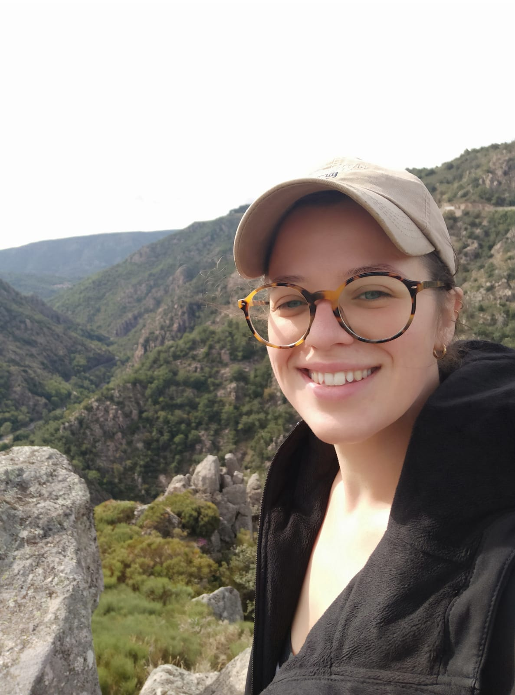

About Me
My name is Sophie. I was born in France and I live my all life thirty minute away from where I was born. I am currently out of work for I decided to concentrate on my study for now. I love to cook and I spend most of my free time in my garden taking care of my vegetables and fruits I grew with myself.
France

France is located in western Europe, surrounded by the mediterranneen sea, the atlantic ocean and the Manche. Its capital is one of the four fashion capitals of the world. France was one of the most touristy country in the world.